|

Clique aqui
para visitar o
Acervo de colunas

|

|
A
melhor temporada de toda a Jornada! Breve
visão geral da quinta temporada de DS9 Behr e cia. já mostraram o inicio da reaproximação entre Klingons e Federados em "Apocalypse Rising". Em seguida as visões de Sisko em "Rapture" (episódio em que são introduzidos na série os uniformes no estilo do filme "Primeiro Contato") previram a aliança ente Cardassia e o Dominion, bem como o pacto de não agressão entre Bajor e o Dominion e a inevitável guerra entre os aliados da Federação e os aliados do Dominion. O duplo "In Purgatory's Shadow" e "By Inferno's Light", marcou de fato o estabelecimento da aliança entre Dominion e Cardassia (e a traição de Dukat imortaliza o cardassiano como o maior vilão da história de Jornada). Com a massiva ofensiva dos Jem'Hadar, os Klingons tiveram que bater em retirada do território Cardassiano e Sisko consegue convencer o chanceler Gowron a revalidar os acordos diplomáticos entre Federados e Klingons. Pouco depois é formalizada a derrocada completa dos Maquis frente aos mesmos Jem'Hadar em "Blaze Of Glory". "In The Cards" serve como um prenúncio da guerra que se faz inevitável e "Call To Arms" dá início a um combate que parecia inevitável desde a primeira vez que o nome Dominion foi citado em um episódio Ferengi ("Rules Of Acquisition") da segunda temporada. Além do popular episódio comemorativo dos 30 anos de Jornada ("Trials and Tribble-ations"), a temporada marcou a estréia de dois importantes diretores, Alan Kroeker (que ganhou confiança total dos envolvidos na série e trabalhou em vários episódios importantes posteriores) e Mike Vejar (muito conhecido dos fãs de "Babylon 5"). O episódio final da temporada ("Call To Arms") marcou a despedida de Robert Wolfe de suas funções de produtor da série, após cinco temporadas na equipe. A temporada, episódio a episódio "Apocalypse Rising" (***) 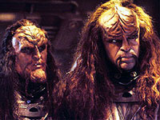 Um bom episódio, por dar o passo inicial na recolocação da série no caminho certo e oferecer salpicados alguns bons momentos dos personagens. Além de esclarecer mais uma manipulação do Dominion, mostra a clara intenção de Behr e cia. de reaproximar Federados e Klingons. Marc Alaimo é competente como sempre na pele de Dukat (a expressão do Cardassiano quando Kira diz que o bebê que carrega é do chefe O'Brien é antológica) e a adquirida "humanidade" de Odo é tocada com grande propriedade (incluindo um irônico abuso de bebida em pleno bar do Quark). Os valores de produção são excelentes, a direção (de James L. Conway) e fotografia (indicada ao Emmy, de Jonathan West) do episódio são particularmente inspiradas e Brooks como Klingon é definitivamente divertido. Não memorável por si só, mas demonstra em perspectiva claramente as intenções globais dos realizadores. "The Ship" (***1/2) Enquanto inspecionando um planeta no quadrante Gama por minérios, Sisko e cia. vislumbram a queda de um caça Jem'Hadar e, constatando a morte de toda a tripulação, o capitão reclama a posse da nave e envia mensagem a estação pedindo a ajuda da Defiant para reboque. Antes da chegada da "navezinha valente", uma outra equipe de Jem'Hadars chega (comandada por uma Vorta de nome Kilana), destrói o explorador Federado em órbita e deixa como únicos sobreviventes no interior da nave acidentada: Sisko, Worf, Dax, O'Brien e um ferido alferes Muniz (engenheiro da equipe do chefe). Entretanto, apesar de possuírem tecnologia para se transportar a bordo da nave a qualquer momento, a líder do destacamento Jem'Hadar decide discutir com Sisko a presente situação. Neste ínterim, um Jem'Hadar se transporta sim e acaba sendo morto com dificuldade por Muniz, ele instalou uma espécie de sensor, que se desativa quando O'Brien o encontra sem permitir identificar a sua função. Fica claro para todos, menos para O'Brien, que Muniz irá morrer e o chefe quase sai no braço com Worf a este respeito. Kilana chama de novo e oferece a nave a Sisko desde que ele deixe que os seus homens retirem um item confidencial da nave, Sisko não concorda. Os Jem'Hadar começam a bombardear a nave acidentada, levando os seus ocupantes ao limite. Uma tentativa de O'Brien de decolar a nave falha e Muniz morre durante o processo, então a Trill vê uma substância gelatinosa descendo do teto. É um fundador ferido que não consegue manter a forma e morre (emitindo ruídos absolutamente tenebrosos) em um monte de cinzas. O bombardeio cessa e Kilana se transporta a bordo e informa que os seus homens cometeram suicídio por terem falhado em sua missão. Sisko permite que ela recolha alguns restos do seu deus e parta. Mais tarde no caminho de volta a estação, Worf se junta a O'Brien para velar o caixão de Muniz enquanto Sisko se senta com Dax preparando as cartas para as famílias de todos os seus comandados que perderam as vidas para que esta única nave pudesse ser trazida para ser estudada pela Federação. Um excelente episódio, com uma ainda superior execução, sobre confiança em tempos de guerra. Este trágico conto é extremamente cativante e a morte de Muniz é mais tocante do que as perdas combinadas de todos os "camisas vermelha" da história desta franquia. A direção de Kim Friedman é de fato inspirada e a situação extrema vivida pelos regulares no interior da nave acidentada foi feita de forma absolutamente envolvente para a audiência. Os conflitos se mostraram verdadeiramente naturais e os personagens regulares brilharam intensamente sob tensão (notadamente Sisko, graças a um ótimo Brooks). A conclusão é apropriadamente intensa e dramática. Belo trabalho dos envolvidos. "Looking for Par'Mach in All The Wrong Places" (**) Em "Looking For Par'Mach in All the Wrong Places", Grilka (a "ex-mulher" Klingon de Quark, como visto no episódio "The House Of Quark", da terceira temporada da série) volta à DS9 para ver o Ferengi. Worf sente uma profunda atração pela fêmea Klingon, mas não tem esperanças de um relacionamento, devido a sua situação de exilado do Império (ver "The Way of the Warrior", que abre a quarta temporada da série). Ao contrário, Worf acaba concordando (por insistência de Jadzia) em ajudar Quark na sedução da bela guerreira (que de fato está interessada no dono do bar da estação), ao melhor estilo de "Cyrano de Bergerac". Equipado com um dispositivo cerebral, que permite que Worf manipule a distância o corpo de Quark (literalmente como uma marionete), o Ferengi consegue vencer um insatisfeito quarda-costas Klingon de Grilka e acaba por receber uma boa dose de sexo Klingon de sua "Roxanne". Para o final, Jadzia (que toma a iniciativa) também se enrosca com Worf em análogo ritual sado-masoquista e os dois casais vão parar na enfermaria, para a surpresa de Bashir. Existe também uma história secundária em que O'Brien e Kira (a major carregando o filho dos O'Brien e vivendo com o casal) começam a sentir atração um pelo outro, mas sem maiores conseqüências. Um episódio fraco globalmente (primariamente pelo fato de que todos os personagens atuam de uma forma meio infantil a maior parte do tempo), mas com alguns bons momentos espalhados, notadamente aqueles baseados no talento de Armim Shimerman. Não tão feliz em explorar as diferenças culturais entre Klingons e Ferengis quanto o já citado "The House Of Quark". "Nor the Battle to the Strong" (****) Voltando a estação em um explorador, Bashir e Jake recebem o pedido de ajuda de uma colônia Federada sob ataque Klingon. O doutor tem inicialmente reservas em levar Jake com ele em uma situação de combate, mas acaba fazendo a vontade do jovem Sisko. Jake passa a ajudar Bashir e os demais no tratamento dos feridos, mas a crescente ameaça de um ataque Klingon ao posto põem fim a qualquer romantismo sobre guerra que o aspirante a repórter poderia ter. Em um dado momento, Jake e Bashir recebem a missão de voltar ao seu explorador para recuperar uma crucial peça de equipamento, para tanto devem tomar uma trilha sob bombardeio dos Klingons. Jake se desespera e sai em disparada deixando Bashir para trás, possivelmente para morrer. Jake corre sem parar, até que tropeça e cai próximo a um moribundo soldado Federado. O filho de Sisko tenta racionalizar a sua situação como se ele pudesse obter redenção (pelo seu "ato de covardia") salvando o soldado, porém este morre sem trazer paz à mente de Jake. O rapaz acaba conseguindo voltar ao posto e é saudado por Bashir (que milagrosamente sobreviveu e conseguiu trazer de volta o equipamento necessário), o que só aumenta a angústia de Jake. Quando chega a hora da ofensiva Klingon, em mais um momento de desespero, o jovem Sisko faz o que pode para salvar a sua vida, acidentalmente colapsando o teto de uma caverna com um feiser, dando tempo ao grupo de resgate liderado por seu pai chegar até ele. Finalmente Jake escreve sobre o ocorrido e impressiona grandemente ao capitão pela sua honestidade. 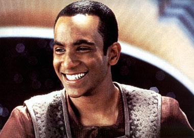 Dentre os episódios de Jornada que tratam do tema da guerra, este ocupa um lugar todo especial. A razão para tanto é bastante simples: contar a história sob a ótica de Jake faz a guerra parecer naturalmente muito mais assustadora e muito mais real, muito mais próxima de um espectador típico, que assim pode se ver naturalmente imerso na pele do personagem. Jake é o mais distante que podemos chegar de um herói dentre os personagens regulares de DS9 e seguir os seus passos e não trapacear e transforma-lo em um "herói no último minuto", traz uma atitude extremamente característica a todo o episódio, que salta aos olhos como diferente, como uma verdadeira lufada de ar fresco. Parece simples, mas não é. Pois requer extrema convicção dos envolvidos para adotar uma determinada (e arriscada) visão e seguir com ela até as últimas conseqüências. Novamente destaque para a direção de Kim Friedman, que explora com propriedade os "personagens da semana" para incrementar ainda mais a atitude diferenciada do segmento e para os excelentes valores de produção. Em última instância Jake se mostrou bastante corajoso ao partilhar a sua experiência com Bashir e com seu pai. Fácil o melhor momento de Cirroc Lofton nas sete temporadas e um clássico de DS9 (cortesia do "Mestre da Caracterização", o roterista René Echevarria)! "The Assignment" (***) Keiko volta de Bajor com Molly, só para informar ao chefe O'Brien que na realidade ela é uma entidade que tomou posse do corpo de sua esposa e que se ele não realizar um conjunto de extremamente complexas manipulações nos sistemas da estação (com objetivos desconhecidos pelo engenheiro) e não contar nada sobre isto a ninguém, Keiko morre. A entidade conhece O'Brien bem demais (através das memórias da verdadeira Keiko) e mostra o real peso de sua ameaça, suspendendo as funções vitais de Keiko por alguns momentos. A tensão de O'Brien continua a crescer à medida que "Keiko" renova seguidamente o seu ultimato de maneiras sutis, mesmo em ocasiões sociais. Ela chega a se jogar do segundo piso do Promenade, quando o chefe já ia contar tudo a Sisko. Neste ponto o episódio parece destinado a uma grandeza similar a de "Whispers" da segunda temporada e Meaney está absolutamente no topo da forma com o seu personagem, mas eis que surge um Ferengi no caminho... Rom é trazido por O'Brien para auxiliar em sua tarefa, aparentemente pelo único motivo que ele é suficientemente idiota para acreditar no absurdo das explicações dadas por O'Brien. O mais incrível é que mesmo depois de servir Rom para Odo em uma bandeja como o "sabotador" da estação, o pai de Nog continua achando que está em uma missão secreta (!?) para Sisko. Eis que subitamente, Rom recebe um cérebro do roteiro e em uma única tacada de diálogo explica a O'Brien que as modificações visam um ataque aos Profetas e conta à lenda Bajoriana dos Pagh-Wraiths (seres introduzidos aqui e que seriam retratados de forma mais proeminente até o final da série), que diz que os Profetas, eras atrás, expulsaram alguns dissidentes seus do templo celestial, aprisionado-os nas "Cavernas de Fogo" em Bajor. Exatamente o lugar que Keiko visitou pouco antes de voltar à estação. O'Brien percebe o que tem que fazer consegue nocautear Odo e levar "Keiko" no explorador em direção a Fenda Espacial, ele ativa remotamente o defletor da estação, mas redireciona o feixe para a sua nave, que mata o Pagh-Wraith e liberta Keiko. O'Brien acaba por explicar o que houve a todos os envolvidos. Apesar do "fator Rom" e da falha de estratégia de "Keiko" ao final, o episódio é mais um bom exemplar do tipo: "Vamos torturar O'Brien" (TM). "Trials and Tribble-ations" (****) "Trials and Tribble-ations" é a maior homenagem já feita à Série Original de Jornada nas Estrelas. Neste episódio, a Defiant (com todos os regulares a bordo, exceto Jake e Quark) é transportada no espaço e no tempo até a estação K7, em meio aos eventos de um episódio da Série Original, o clássico "The Trouble With Tribbles". Aqui, os cenários da Série Original (incluindo os modelos da Enterprise original, do cruzador Klingon D7 do grande amigo de Dax, Koloth --não apresentado no episódio original-- e da própria estação K7) são reproduzidos nos mínimos detalhes, em um trabalho simplesmente sobrenatural da produção. 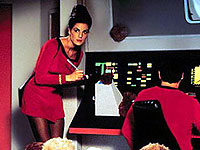 Ainda que a "exuberância" de Jadzia e a idolatria generalizada por Kirk pareçam exagerados, porque fica clara a atitude dos roteiristas e produtores em tomar emprestado as bocas dos personagens e falar através deles (não por acaso toda a equipe de escribas da série é creditada pelo episódio), nada disso fere o caráter "especial" objetivado e atingido pelo segmento. Um verdadeiro clássico, sem rivais em termos de puro entretenimento acessível, constante e sustentado em toda a história do franchise. O episódio existe essencialmente "fora" da série e o fato de Sisko contar a história para dois "investigadores temporais" (Dulmer e Lucsly, anagramas dos nomes de dois conhecidos "agentes do FBI") só caracteriza melhor este senso de não realidade. Existem inúmeros momentos antológicos em "Trials..." (que também recria de forma desconcertante os interiores tanto da estação K7 quanto os da Enterprise original). Praticamente cada cena tem algo a se elogiar (nos termos deste gigantesco senso de nostalgia evocado), as favoritas do autor são (por pareceram ter sido feitas originalmente para este propósito): a cena da ponte em que Kirk interage com Jadzia, de uma forma aparentemente ensaiada, e quando Uhura parece "dar mole" para Sisko quando este pede "um autógrafo" a Kirk (esta última cena sendo retirada do episódio "Mirror, Mirror"). (George Takei é que pegou a pior parte aqui. Ele participou do lastimável "Flashback", da terceira temporada de Voyager --também um episódio comemorativo dos 30 anos de Jornada--, e não participou do "The Trouble With Tribbles", não "participando" também de "Trials and Tribble-ations".) "Let He Who Is Without Sin..." (SEM ESTRELAS) Este é um forte candidato a "pior episódio da série" (na realidade talvez o seu único concorrente "a altura" seja "Profit and Lace" da sexta temporada) e é claramente o pior desta quinta temporada. Dax e Worf vão para Risa (levando Quark, Leeta e Bashir com eles) para discutir "coisas sérias" sobre o seu relacionamento. Dax irrita Worf por levar o relacionamento dos dois pouco a sério. Já a Trill pensa que o Klingon deve relaxar um pouco. 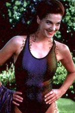 Como toda "Boa história de um casal em férias" (TM), assim que chegam a Risa, Worf e Jadzia começam a brigar sem parar e Worf chega a "surpreender" Jadzia com uma ex-amante de Curzon (interpretada por Vanessa Williams --E O AUTOR NÃO ESTÁ BRINCANDO QUANTO A ISTO-- e "sexualmente responsável" pela morte do velho Trill), o que não ajuda em nada a situação dos dois. Eis que surge um bizarro grupo de "fundamentalistas" que acham que a Federação "perdeu o seu rumo" devido ao seu uso e dependência de tecnologia e que consideram Risa uma representação viva deste "mal" (por ser terraformada para ser um paraíso turístico). O incrível é que Worf parece aceitar os argumentos imbecis do chefe de tal grupo (!) e acaba tomando conta do controle climático do planeta (através de um tricorder modificado) e literalmente "faz chover" em cima de todo mundo (!?), muito mais motivado pelos seus problemas com Jadzia do que por qualquer outra coisa. Tudo aqui é abismal e o discurso final de Worf parece indicar que "enfim tudo esta bem", quando uma derrapada tão grande como a que o Klingon cometeu (estragando as férias de milhares e milhares de pessoas) deveria ter significado o fim da carreira de qualquer oficial. Lamentável! ANTIMATÉRIA PURA! Um dos momentos mais constrangedores do segmento se dá quando Leeta e Bashir --realmente é ver para crer-- realizam um EXTREMAMENTE LONGO E ELABORADO "ritual de separação Bajoriano", que termina com Leeta anunciando o seu interesse por Rom, para espanto de Bashir. Por falar nisto, Siddig El Fadil já admitiu publicamente que durante as filmagens do episódio estava mais preocupado com o fato de Nana Visitor ter ido para o hospital para ter o filho do casal do que com o episódio em si. E aparentemente os demais envolvidos não estavam muito longe de tal atitude também. Robert Hewitt Wolfe já disse que este foi o pior episódio que ele já escreveu. "Things Past" (***) Voltando de um congresso (sobre a ocupação Cardassiana) em Bajor; Garak, Dax, Odo e Sisko subitamente se vêm na Terok Nor dos tempos da ocupação sob o comando de gul Dukat. Mas curiosamente eles são vistos naquele ambiente como Bajorianos. Odo informa que eles não são Bajorianos quaisquer, são exatamente aqueles acusados e executados por um atentado contra a vida de Dukat em um famoso caso. Enquanto isto é mostrada a audiência à chegada dos quatro inconscientes à estação em um estado que Bashir não consegue explicar. A ação vista está se passando na mente dos quatro. Curiosamente o oficial de segurança da estação ainda é o cardassiano Thrax (Kurtwood Smith), mas pela data da execução, Odo já seria o responsável. Quando os quatro são presos, na esteira de um atentado a vida de Dukat, aguardando a execução, Thrax visita a cela e fica claro que Odo fala consigo mesmo a respeito da necessidade de uma melhor e mais completa investigação do caso (Thrax inclusive se apresenta como um transmorfo). A realidade daquela "Terok Nor" torna impossível a fuga dos quatro até que finalmente Odo admite sua falha naquela investigação e como algum tempo depois descobriu a respeito de sua inocência, ao mesmo tempo em que são apresentadas as imagens da execução dos verdadeiros bajorianos. Os quatro acordam e Bashir explica, que de alguma forma a mente inconsciente de Odo formou uma espécie de "Elo" entre os quatro. A menos do capenga dispositivo de trama que coloca a história em movimento (baseado em uma discutível, se não absurda, "tecnobaboseira") e da desnecessária "falsa encrenca" que ameaça a vida de Sisko, Dax e Garak enquanto revivendo as memórias de Odo, temos um muito bem realizada conto (mais uma bela recriação de Terok Nor, agora comandada pelo diretor Levar Burton) sobre a culpa de um homem e a necessidade de colocar tal coisa para fora. Os paralelos com o clássico "Necessary Evil" (da segunda temporada da série) são evidentes e muito bem-vindos. A cena final entre Kira e Odo é gêmea daquela que encerra "Evil", somente com a posição dos personagens agora invertida. "The Ascent" (**1/2) 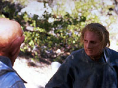 Este, talvez seja o maior segmento envolvendo a dupla oficial de "amigos/inimigos" da estação e a sua curiosa relação, mas aqui fica a dúvida se tal relação é mais efetiva em pequenas doses por episódio, ou se a trama escolhida aqui foi simples demais (ou comum demais) para sustentar o tempo de tela alocado a ela, ou ainda se a história não foi suficientemente fundo na complexidade de tal relação para desvende-la a contento e de maneira menos previsível. De toda a forma, Auberjonois e Shimerman são ótimos juntos e as externas foram muito bem feitas. Em uma história secundária, Jake deixa os aposentos do pai e vai morar com Nog, de volta a estação para os seus estados de campo referentes ao segundo de curso da Academia. Nog se tornou alguém extremamente disciplinado e entra em conflito com o mais relaxado Jake. Com uma ajuda de Sisko, os dois acabam cedendo um pouco em cada lado da questão. Os resultados desta parte do episódio são amigáveis e genuínos, apesar de novamente nada revolucionárias. "Rapture" (****) 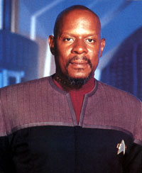 Os superiores de Sisko começam a pressiona-lo a respeito dos preparativos da cerimônia de admissão de Bajor, mas Sisko não está muito interessado nisto e começa a ter visões cada vez mais estranhas e metafóricas, agora sobre gafanhotos que atravessam o Templo Celestial e rumam para Cardassia. Sisko começa a atingir um estado de iluminação em que o passado, presente e futuro tornam-se uma única coisa e caminha no Promenade (em uma antológica cena), oferecendo conselhos e conforto a todos. Após uma experiência com um Orb, Sisko irrompe a sessão de admissão Bajoriana e diz que é muito cedo e que Bajor deve permanecer isolado senão será destruído. O que faz com as negociações sejam adiadas por tempo indeterminado. Sisko está às portas da morte e como recusou o tratamento para ver as visões até o fim, cabe a Jake decidir por uma operação de emergência. Sisko lamenta muito a perda das visões, mas entende a posição do seu filho e de Kasidy. Sisko também promete que um dia Bajor irá entrar para a Federação e isto ele diz como capitão e como Emissário. Sem dúvida um dos melhores, mais substantivos e mais bem escritos episódios de toda a série. Ao se recusar a tratar as visões de Sisko em termos de "tecnobaboseira" ou que tais Behr e cia. entram em um terreno de extrema originalidade dentro da franquia. Uma rota que trata legitimamente da fé e que é magistralmente capturada no OPS em uma conversa entre Kira, Dax, O'Brien e Worf em que a major recebe uma memorável ajuda do Klingon em seu argumento. Brooks (em sua melhor atuação em toda a série) nos absorve completamente com a descrição de sua experiência. Sua "lembrança" de ter estado em B'hala e a impressão de estar carregando em seus braços o próprio universo, como uma criança que ele quer olhar a face e que quer compreender, são simplesmente arrebatadores, trazendo um senso de deslumbramento e ao mesmo tempo de viagem de descoberta pessoal raramente visto na história da franquia. O episódio mostra a Sisko, algo que vale a pena morrer para entender. Deste ponto em diante na série ele abraça o seu papel como Emissário e protetor de Bajor. Suas visões aqui se tornam verdade e servem de prenúncio a guerra que se aproxima. O episódio também apresenta a melhor caracterização de Kai Winn em toda a série (e pelo menos duas cenas clássicas com Kira). "The Darkness and the Light" (***) Alguém começa a matar os ex-membros da célula de resistência Shakaar, que Kira fez parte nos tempos da ocupação Cardassiana. A cada ex-membro morto, o assassino (que utiliza sempre sofisticados métodos para cometer os crimes) envia uma mensagem para Kira a respeito do fato, levando a major ao limite com tal sadismo. Furel e Lupaza (ver o episódio "Shakaar" da terceira temporada) vêm à estação para ajudar Kira a encontrar o culpado, quando os dois são mortos em uma explosão dos aposentos dos O'Brien. Kira diz "basta" e rouba a lista de suspeitos do escritório de Odo e parte sozinha em um explorador para caçar o culpado sem dar satisfação a ninguém. O episódio não faz muito esforço em explicar como Kira identificou o nome do recluso Cardassiano Silaran Prin na lista como o assassino e exatamente como ele conseguiu executar homicídios com tamanha sofisticação e precisão (ninguém ter sequer citado o nome do próprio Shakaar durante o curso do segmento também é uma falha), entretanto após a major descobrir o esconderijo do Cardassiano é que chegamos ao coração do segmento, uma reflexão sobre inocência e culpa em meio a uma situação de guerra. O deformado Prin alega que ele era um inocente que simplesmente servia aos altos militares Cardassianos e foi uma vítima de um atentado promovido pelo grupo de Shakaar anos atrás. Seu discurso é claramente de alguém perturbado, mas que ainda assim traz verdade a mesa de discussão. Kira (imobilizada para "cirurgia") não fica muito sensibilizada com a dor do cardassiano e diz que ele era culpado por simplesmente estar lá. Prin diz que vai matar Kira, mas preservar o inocente, o filho dos O'Brien. A major consegue enganar o cardassiano e mata-lo. Sisko e cia. chegam e ouvem Kira refletir sobre o ocorrido. O vigor das atitudes de Kira neste episódio, mesmo ainda grávida, e o fato dela não recuar um milímetro sequer frente às acusações de Prin, chocou alguns fãs na época. Os valores e produção são excelentes e o ambiente do esconderijo é extremamente bem fotografado pelo diretor Mike Vejar, capturando perfeitamente a essência da questão: a escuridão e a luz. Apesar de ser muito bom ter de volta todo o fogo da "velha Kira" das duas primeiras temporadas, a falta de conseqüência para os atos da major (com relação à quebra de protocolo e cadeia de comando e colocar o filho de O'Brien em perigo) fere mais o episódio do que os problemas de trama citados acima (algo que fica melhor debitado na conta da série como um todo). "The Begotten" (***) Chega a posse de Quark uma porção de goma que na realidade é um "bebê transmorfo", aparentemente um dos cem enviados ao universo pelos Fundadores, assim como Odo, para trazer conhecimento ao "Grande Elo". Odo assume a tutela do infante e o comissário é pressionado para obter informações a respeito de sua fisiologia pela frota Estelar. Entra em cena o doutor Mora Pol (do episódio "The Alternate" da segunda temporada e vivido por James Sloyan) para tentar acelerar o processo. Odo não quer impor ao "bebê" nenhum dos métodos que Mora aplicou nele quando no laboratório do Bajoriano, mas a pressão por resultados aumenta e Odo começa a se colocar na posição do seu "pai" nos tempos da ocupação Cardassiana. As táticas mais gentis e empáticas de Odo de fato produzem melhores resultados e isto é reconhecido por Mora, o que acaba aproximando os dois. Infelizmente o "bebê" começa a apresentar sinais de instabilidade em direção a uma morte rápida. Entretanto antes do seu fim, ele se funde a Odo que assim recupera as suas habilidades metamórficas. Uma bela história sobre reconciliação entre pais e filhos, em uma situação espelho e Auberjonois e Sloyan trabalham maravilhosamente bem juntos. Fica a dúvida se este foi o melhor momento e maneira de Odo recuperar os seus poderes, apesar da execução de tal ato ter sido sem dúvida excelente em tela. A história secundária que traz do nascimento de Kirayoshi O'Brien é pouco efetiva e as cenas envolvendo os ciumentos Shakaar e Miles O'Brien são um tanto quanto ridículas. A noção de que uma mulher Bajoriana dá a luz completamente relaxada é até interessante, mas muito pouco para levantar esta parte do episódio. "For the Uniform" (***1/2) Informações completas sobre "For The Uniform" aqui. A completa história dos Maquis em Jornada está disponível em um artigo em cinco partes. Dê um pulo nesta página para ler. "In Purgatory's Shadow" (****) Garak recebe uma mensagem codificada de Enabran Tain (presumido morto ao final de "The Die Is Cast"), e Sisko envia o Cardassiano e Worf para investigar em um explorador, eles vislumbram uma frota do Dominion escondida em uma nebulosa próxima à entrada da Fenda Espacial, um óbvio prenúncio de invasão. Antes do explorador ser capturado, Worf envia uma mensagem a estação. Os dois são levados a um campo de prisioneiros do Dominion (aparentemente para pessoas chave ou que foram substituídas por Fundadores) em que surpresas de trama saltam literalmente da tela: o verdadeiro Martok (que mostra aqui ter sido substituído antes de "The Way Of The Warrior", por não reconhecer Worf), o verdadeiro Bashir (realmente chocante e pelo uniforme teria sido substituído antes de "Rapture") e é claro, um moribundo Tain. Na potente cena da morte do velho Cardassiano, tem-se mais uma revelação, agora de que Tain é o verdadeiro pai de Garak. A cena é extremamente tocante e tão verdadeira que realmente emociona. De volta a estação, Sisko e cia. se preparam para um iminente ataque. Brilhante trabalho de todos os envolvidos em mais um grande momento da série, excepcionais caracterizações colidem com uma trama que parece querer virar o espectador do avesso e revirar as suas entranhas. Clássico absoluto! 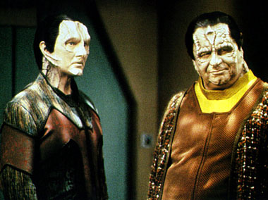 "By Inferno's Light" (***1/2) As naves Jem'Hadar atravessam a Fenda Espacial e rumam para Cardassia e são seguidas por Dukat, Cardassia está se unindo ao Dominion e Dukat é o seu novo líder. O que constitui uma das poderosas e bem vindas reviravoltas de toda a série. De volta ao campo de prisioneiros, Worf e cia decidem usar o painel de comunicação improvisado por Tain para contatar o explorador e fazer o transporte para fora do complexo. Garak é obviamente o mais indicado para o trabalho, mas ele terá que controlar a sua claustrofobia para realiza-lo. Worf luta continuamente com os Jem'Hadar em uma espécie de "torneios", com um crescente grau de dificuldade. De volta estação o Fundador-Bashir parece ter uma sabotagem em mente e tudo aponta para um grande ataque do Dominion, à medida que Dukat ameaça seguidamente Sisko. Os Klingons são expulsos de Cardassia pelos Jem'Hadar e são forçados a parar para reparos em Deep Space Nine, Sisko aproveita a oportunidade para convencer o chanceler a revalidar os acordos diplomáticos com a Federação que ele assim o faz e ainda mais surpreendente uma frota de aves de guerra Romulanas pede permissão para se juntar a Frota, o que Sisko concede. Infelizmente, apesar de funcionar maravilhosamente em longo prazo, o final do episódio não é tão satisfatório em si próprio. Na realidade o Dominion não desejava realizar um ataque, mas simplesmente fazer Federados, Romulanos e Klingons acumulares forças na vizinhança da Fenda Espacial para poderem ser dizimadas quando o sol de Bajor se torna uma supernova, cortesia do Fundador-Bashir, sem disparar um único tiro. Worf e cia fogem no último momento possível do campo de prisioneiros e avisam a estação sobre o Fundador-Bashir, Kira consegue então impedir o explorador do impostor de realizar o seu objetivo. O final realmente saiu apressado demais, não fazendo jus a um "setup" desta monta. De todo modo mais um excelente segmento da série e definitivamente um "para os livros" por suas várias implicações a longo prazo. "Dr. Bashir, I Presume" (***) O doutor Lewis Zimerman (criador do doutor holográfico de Voyager e vivido pelo mesmo Robert Picardo) chega a estação com o objetivo de usar Bashir como modelo para a próxima versão do seu programa. Durante as pesquisas, Zimerman convoca os pais de Bashir para a estação e quando os dois confundem uma simulação de Julian com o seu filho, eis que o segredo de que Bashir fora modificado geneticamente por seus pais ainda criança (com sérios problemas de aprendizado) vem à tona. Tal procedimento é proibido pela lei da Federação e a carreira e a vida prática de Bashir estão por um fio. Eis que o seu pai faz um acordo com o almirantado para cumprir pena pelo seu crime em troca de Julian não perder o que conquistou. Talvez o mais importante desenvolvimento de Bashir em toda a série, tal descoberta traz uma nova luz a inúmeras características que Bashir exibiu durante até este ponto, fazendo muito sentido e ao mesmo tempo chocando os fãs regulares. Tal fato seria utilizado recorrentemente até o final das sete temporadas do programa. Uma história secundária que envolve um absurdo triangulo amoroso entre Rom, Leeta e Zimerman é do tipo "quanto menos se falar melhor". "A Simple Investigation" (**) Odo prende uma mulher de nome Arissa (Dey Young) por esta estar acessando ilegalmente informação a bordo da estação. Arissa confidencia ao comissário, que ela trabalha para um certo Draim do Sindicato Orion e que está querendo arrumar uma maneira de deixar a organização. Odo decide ajudar Arissa a entrar em uma espécie de programa de proteção às testemunhas e se vê se apaixonando por ela ao passar o tempo cuidando de sua segurança. Tal paixão é consumada e, "sexo transmorfo" ou não, a química entre Auberjonois e Young é excelente. Obviamente a primeira real história de amor de Odo teria que terminar em um coração partido, em que vem a tona que na realidade Arissa é uma agente Idaniana que teve suas memórias (e feições) alteradas para se tornar capaz de se infiltrar de forma mais eficiente no sindicato e colher evidências para derruba-lo. Ela é casada, o que impossibilita a continuação do relacionamento com o comissário. O segmento lembra muito "Crossfire" da quarta temporada, com uma trama extremamente batida e previsível, dependendo quase que exclusivamente da ressonância emocional de um dilema amoroso de Odo para funcionar. Se naquela ocasião tal tarefa foi feita apenas de forma marginal (graças em grande parte a uma cena chave entre Odo e Quark), aqui o efeito residual do episódio é praticamente nulo, apesar de alguns bons elementos espalhados. Simplesmente o segmento não tem peso suficiente para se sustentar. "Business as Usual" (***) Naquele que talvez seja o melhor veículo dramático de Quark em toda a série, o Ferengi se vê na iminência de perder até a roupa do corpo para os seus credores quando recebe uma oferta de negócio do seu infame primo Gaila (aquele mesmo que lhe deu um presente que quase o matou em "The Little Green Men") e de um contrabandista de armas amigo dele de nome Hagath. Quark concorda em usar a estação para fazer a venda de armas. Ele dribla as restrições legais usando um "mostruário holográfico" para implementar as vendas. Kira e Sisko não podem pegá-lo legalmente, o que não impede que eles desçam o "sarrafo verbal" em cima do Ferengi (o que é mais do que justificável se lembrarmos da ajuda que o pessoal da estação deu a Quark ao final de "Body Parts" da quarta temporada). Quark percebe no que se meteu e planeja ganhar o suficiente para cobrir suas dívidas e desistir do negócio, quando descobre que Hagath tem o costume de eliminar os parceiros de negócios que o traem ou abandonam. Eis que chega a estação um regente de um mundo não-federado procurando por uma arma de destruição em massa, algo na casa de 28 milhões de baixas. Quark sabe que tem que desistir do negócio já, apesar de Gaila tentar racionalizar como insignificante as perdas de milhões de vidas em meio a todos os povos em guerra na galáxia. Quark não pode fazer o mesmo, ele não queria vender armas em primeiro lugar e definitivamente não quer fazer parte de tamanha destruição de vidas. A solução encontrada por Quark é um tanto simplista, beirando o absurdo. Ele simplesmente convida as duas partes do conflito (o tal "regente" e sua contraparte) para oferecer as armas na estação e força o encontro surpresa dos dois no hangar de carga, que é proverbialmente explosivo. O "regente" é morto e Gaila e Hagath fogem que nem loucos dos seus inimigos. Quark se sai essencialmente incólume, apesar de ter chegado tão perto do poço. O episódio não faz uma grande "coleta de lixo" ao seu final e Sisko deixa Quark fora de problemas de uma maneira um tanto fácil demais. A mensagem do episódio não é particularmente profunda em termos puramente humanos, mas é bastante relevante para uma sociedade tão guiada pelos lucros como a dos Ferengis. Existe também uma história secundária em que O'Brien tem cuidar do seu filho sozinho sem Keiko e os resultados são inofensivos, ainda que agradáveis. "Ties of Blood and Water" (***) Tekeny Ghemor (Lawrence Pressman), o "pai Cardassiano" de Kira (ver "Second Skin" da terceira temporada) chega à estação para encontrar a major. Ele sofre de uma doença terminal e quer passar o seu conhecimento sobre a política Cardassiana (bem como as fraquezas de Dukat e da aliança com o Dominion) para a coisa mais próxima de uma família que lhe resta, no caso a major. Será algo bastante difícil para Kira como logo lhe alerta Bashir, mas os segredos que Ghemor traz podem ser muito valiosos para o conflito entre a Federação e Dominion que se forma no horizonte. O que logo Dukat confirma, enviando uma mensagem a Sisko pedindo Ghemor de volta. Dukat obviamente não desiste e vai a DS9 com o embaixador Vorta Weyoun a tiracolo (vivido por Jefrey Combs e inaugurando a noção da continua clonagem dos Vortas na série - o Weyoun anterior foi morto ao final de "To The Death" da quarta temporada) e tenta pessoalmente convencer Ghemor a se entregar o que obviamente não acontece. Ele em seguida envia uma garrafa de bebida envenenada para o velho Cardassiano. Em uma das cenas clássicas de toda a série, Sisko traz calmamente a garrafa fechada para a mesa de Dukat e Weyoun, onde o Cardassiano nega tudo, Weyoun não faz cerimônia e bebe (para espanto dos outros dois) o vinho e descobrimos que os Vortas são imunes a maioria dos venenos conhecidos (algo "muito útil na política" segundo o Vorta). O coração do episódio reside nos paralelos que Kira vê entre a iminente morte de Ghemor e na morte do seu próprio pai. Após Ghemor começar a ditar as suas "memórias" vemos em flahsback (com direito a presença de um Furel com os dois braços) como o seu verdadeiro pai Bajoriano chegou ferido ao seu acampamento da resistência. Enquanto isto Dukat não desiste e entrega a major o registro militar de Ghemor que mostra que quando muito jovem ele serviu na ocupação Cardassiana e teve seu nome associado (aparentemente de uma forma insignificante) a um massacre em um monastério Bajoriano, mas isto é o suficiente para Kira ficar com raiva de Ghemor por ter omitido isto e por Dukat por se valer de ardil tão sujo para fazer com que ela dê as costas para um velho moribundo. Bashir tenta convencer Kira a reconsiderar e ficar com Ghemor nos seus últimos minutos de vida, mas isto é em vão. Kira então se recorda como ela partiu naquele dia para buscar vingança ao invés de ficar com seu pai para morrer, o fez por vontade própria, pelo simples motivo que não podia dar conta de tal situação. Ela decide não cometer o mesmo erro e faz uso desta "segunda chance" ficando a beira da cama do Cardassiano. Ela enterra o seu "segundo pai" ao lado do primeiro, em uma mostra de um pequeno e extremamente bem realizado drama. "Ferengi Love Songs" (*) "Ferengi Love Songs" é mais um catastrófico episódio Ferengi. Esta PÉSSIMA hora de televisão, que degenera em um dramalhão horroroso, só não é o pior segmento da temporada devido à "imbatível concorrência" de "Let He Who is Without Sin...". Quark, em meio a uma grande maré de azar, retorna para Ferenginar para passar algum tempo com sua mãe Ishka (ver "Family Business" da terceira temporada), só para descobrir que ela está tendo um caso com o Grande Nagus Zek (agora sofrendo graves perdas de memória e dependendo cada vez mais das habilidades financeiras da "problemática Ferengi"). Obviamente Quark tenta tirar vantagem da situação e chega mesmo a fazer um acordo com o seu arqui-rival Brunt (da F.C.A.) em troca da sua licença de volta (ver "Body Parts" da quarta temporada). Mas ao final volta atrás, faz as pazes com a sua mãe e dá sua benção ao relacionamento de Zek e Iskha. Realmente o episódio é ruim e previsível ao extremo, chega a assustar. Uma história secundária envolvendo Rom e Leeta decidindo se vão se casar ou não só deixa tudo ainda pior. "Soldiers of the Empire" (***) O general Martok tem a primeira chance de comandar uma missão após o seu retorno do campo de prisioneiros do Dominion e recruta Worf como primeiro oficial e Dax como oficial de ciências para ir com ele na Ave de Rapina Rotarran, cuja tripulação se encontra desmoralizada por uma sucessão de derrotas frente aos Jem'Hadar. Sua missão, recuperar o cruzador B'Moth, dado como perdido na fronteira Cardassiana. A premissa é bastante simples e existem inúmeros elementos já rotineiros nas aventuras Klingon que são reutilizados no episódio, mas o que o faz funcionar é a iminente e inevitável colisão entre um guerreiro (Martok) inseguro em entrar em combate contra o mesmo inimigo que lhe proporcionou tão brutal experiência no cativeiro e uma tripulação que simplesmente não agüenta mais ser objeto do ridículo. À medida que as intenções de Martok de não entrar em combate se tornam claras e o descontentamento entre a tripulação cresce, cabe a Worf desafiar Martok para um duelo e tomar o controle da nave. Martok sem um olho não é páreo para Worf, que abre intencionalmente a sua guarda, porém Martok não o fere mortalmente, e de alguma forma Martok recupera a sua confiança e ordena que a nave atravesse a fronteira Cardassiana para resgatar os sobreviventes da recém detectada B'Moth. De volta a estação, Martok muito agradecido convida Worf a se juntar à Casa de Martok, cujo símbolo Worf passa a usar a partir dai. Iniciando um dos relacionamentos mais queridos e verdadeiros de toda a série. "Children of Time" (****) 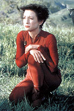 Yedrin Dax (o hospedeiro atual do simbionte) tem um plano para salvar tanto a Defiant quanto à colônia, através de uma complicada manipulação que produziria duas Defiants, uma partindo de volta a estação e uma outra voltando no tempo e levando a criação da colônia. A teoria de Yedrin (que se culpa por ter sido Dax que convenceu a todos a investigar o planeta em primeiro lugar) é uma fraude que visa a preservação da colônia, impossibilitando a Defiant de voltar para casa, não existe maneira de fazer as duas coisas. O pior é que o ferimento de Kira adquirido quando a Defiant atravessou a barreira é mais sério do que pensa Bashir inicialmente e ela irá morrer se não voltar para estação e receber tratamento adequado, como prova temos o seu túmulo próximo à colônia. Odo está em um receptáculo por que não é capaz de manter a sua forma humanóide dentro dos limites da barreira. Para surpresa de Kira, ela encontra a versão futura do Odo de Gaia, que de uma tacada só diz que a ama, que sempre a amou. Do dilema de Dax, ao de Kira que caminha sobre a sua própria sepultura se perguntando se é certo viver em detrimento daquelas oito mil vidas de Gaia, até a simpatia que Worf adquire por um grupo de nativos que se intitulam apropriadamente como os "filhos de Mogh", tudo no episódio é absolutamente brilhante e totalmente guiado pelos seus personagens. Após uma linda cena em que todos se juntam para plantar a próxima colheita, Sisko e cia. decidem voltar no tempo e preservar a colônia, a para a sua surpresa o piloto automático da Defiant muda a rota no último momento e a nave segue seu caminho de volta ao espaço normal, a colônia desaparece instantaneamente. Quem terá mudado o plano de vôo? Odo vai aos aposentos de Kira e confidencia a major que foi o Odo de Gaia que mudou a programação do computador da Defiant. Odo diz que ele fez isto por que ele a amava e não poderia deixa-la morrer de novo. Kira fica chocada e pensa se poderá olhar da mesma forma para alguém que sacrificou (ou melhor, que poderia sacrificar) uma civilização inteira por ela. Finalizando um dos mais belos e tocantes episódios de viagem no tempo (e paradoxos associados) da história da franquia. "Blaze of Glory" (***1/2) 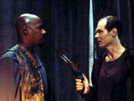 A completa história dos Maquis em Jornada está disponível em um artigo em cinco partes. Dê um pulo nesta página para ler. "Empok Nor" (***) O'Brien precisa de peças de reposição para DS9 e não pode replica-las, ele sugere a Sisko que eles tentem salvar algo da estação gêmea, de nome Empok Nor, abandonada há tempos em um setor próximo. O'Brien recruta Garak (como especialista, uma vez que normalmente os cardassianos deixam armadilhas quando abandonam as suas instalações), Nog e mais dois engenheiros e dois oficiais de segurança. Garak tem sucesso em abrir a comporta de atracação e restaurar o suporte de vida básico na estação (o que também traz a "de volta a vida" um par de Cardassianos fruto de algum experimento Cardassiano que deu errado - na prática dois "autômatos orgânicos", sob controle de uma potente droga - que servem de seguranças para o que restou da estação). A equipe sobe a bordo e começa a busca por partes. Garak descobre as câmaras dos dois soldados abertas na enfermaria e tem pelo pior. Nog vai verificar a comporta e vê o explorador a deriva, explodindo logo em seguida. O'Brien rapidamente bola um plano para emitir um SOS usando o defletor da estação. Garak não está muito interessado em ajudar e vai atrás dos dois soldados. Um dos soldados Cardassianos mata dois membros da equipe de O'Brien e em seguida é morto por Garak, que informa a O'Brien sobre o ocorrido. O ex-agente da Ordem Obsidiana persegue o outro soldado e consegue mata-lo, pouco depois dele tirar a vida de mais um membro da equipe Federada. Só que surpreendentemente Garak apunha-la um outro membro da equipe (que ainda consegue avisar o chefe antes de morrer). A citada droga passou a afeta-lo também. Garak começa a elaborar pequenos "joguinhos" com o passado de soldado de O'Brien, e de sua conhecida aversão por Cardassianos, que leva a um confronto naquele Promenade em que se vem os Federados mortos pendurados nas paredes e Nog preso. Um combate corpo a corpo favorece Garak até que O'Brien toca o seu comunicador que faz detonar um feiser modificado no chão que coloca Garak inconsciente. De volta a enfermaria da estação, Garak (já livre dos efeitos da droga) pede que O'Brien fale coma família do oficial que ele matou. O'Brien confessa que a sua pequena armadilha era para matar o Cardassiano, que não pode culpar o chefe por isto. Este é um efetivo e pequeno "filme B", versão DS9, onde o estilo e horror gráfico tomam a frente da caracterização e das motivações dos personagens. Empok Nor é soberbamente iluminada e fotografada e a atmosfera do episódio é densa o suficiente para ser coletada com uma colher. Os cenários, obviamente os mesmos de DS9, são modificados de forma tão criativa que é difícil de manter o pensamento em que isto é realmente verdade. Robinson tem a chance (a contragosto) de fazer mais um psicopata e o faz de forma simplesmente brutal em bela sintonia com Meaney. Um atípico episódio para DS9, mas efetivo mesmo assim. "In the Cards" (****) No começo do clássico "In the Cards", o moral da tripulação está muito baixo, o início de uma guerra com o Dominion é iminente e Sisko --especialmente-- está muito preocupado. Jake decide dar um presente a Sisko, e um raro card de beisebol, de 1951, de Willie Mays, que será leiloado em breve por Quark, seria o perfeito presente para o seu pai. Jake "recruta" Nog (obviamente contando com as economias em Latinum do jovem Ferengi) para o leilão. Infelizmente, uma estranha figura, um tal de doutor Giger, arremata o lote com o card, para desespero de Jake. Eles contatam o infame cientista, o qual propõe uma troca por uma enorme lista de produtos que seriam utilizados em sua experiência. Giger busca a imortalidade, ele acredita que a causa do envelhecimento e da morte é o "tédio celular", e planeja terminar a construção de uma "câmara de entretenimento celular". Uma pessoa que entrasse em tal câmara periodicamente atingiria a vida eterna. Jake e Nog (com certeza que Giger é louco, mas sem outra opção para reaver o card) não podem pedir ajuda diretamente a ninguém, pois o presente para Sisko é uma surpresa, e decidem trocar favores com o resto dos personagens pelos itens da lista de Giger (sem que ninguém saiba realmente o que eles estão fazendo). Daí, eles registram suprimentos para O'Brien, remasterizam a coleção de ópera Klingon de Worf, escrevem discursos para Kira e mesmo recuperam o ursinho de pelúcia de Bashir (o fofinho "Kukalaka", citado em "The Quickening" da temporada passada). Quando eles voltam para os aposentos do cientista, este está completamente vazio. Antes que possam fazer qualquer coisa, são transportados para a nave de Weyoun (o embaixador Vorta vivido por Jefrey Combs, que estava na estação para um encontro diplomático com Kai Winn, visando à assinatura, por parte de Bajor, de um pacto de não agressão com o Dominion), onde já estão Giger e todo o seu equipamento. O representante dos Fundadores quer saber porque o cientista estava realizando experimentos (com fontes de energia radioativas) justo embaixo dos seus aposentos e porque Jake e Nog tiveram encontros com o cientista, com Kai Winn (que por um momento Jake pensou ser responsável pelo sumiço do cientista) e com todos os oficiais superiores da estação nas últimas horas. Jake, depois de falar a verdade e não conseguir efeito inventa a mais absurda e hilária história sobre trabalhar (secretamente) para a Frota Estelar, em uma missão de segurança para a própria Federação: deter um viajante do tempo de nome (adivinhem) Willie Mays. Weyoun não acredita em nada do que Jake fala e percebe que a primeira versão era de fato verdadeira. Fascinado com o objetivo de Giger (os Vortas são continuamente clonados), ele deixa os dois livres com o card. Jake dá o presente ao seu pai, que dita uma emocionante entrada do seu diário, sobreposta a uma bela música e as imagens dos outros tripulantes aproveitando os "efeitos colaterais" deste seu presente (inclusive de Weyoun entrando na tal Câmara), em um dos melhores momentos da série e do franchise. A forma como Ronald D. Moore (o roteirista do segmento) conecta as duas histórias (uma muito séria e uma completamente "fofinha") sem descaracterizar nenhum personagem é brilhante, com um estilo de "dramédia" que lembra muito o do mestre David E. Kelley em sua melhor forma. Este episódio é provavelmente a mais inteligente, sofisticada e humana comédia da história de Jornada nas Estrelas. Sem truques ou high-concepts, simplesmente se preocupando em contar uma boa história DENTRO dos limites de DS9. "Call to Arms" (****) 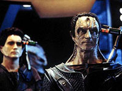 Finalmente a força tarefa do Dominion sob o comando de Dukat e Weyoun ataca DS9. Martok a bordo da Rotarran consegue dar a Defiant comandada por Dax suficiente tempo para posicionar e ativar o campo minado. De volta a estação, percebendo que não poderia mais conter o ataque inimigo, Sisko ordena que todos os Federados devem partir. Ele profere um discurso emocionado, dizendo que ao mesmo tempo em que combatiam as forças de Dukat, uma força tarefa Federada-Klingon atacava um importante estaleiro no coração de cardassia. O capitão jura que irá retornar. Kira (que sabota a estação), Odo e Quark ficam para trás para recepcionar Dukat e companhia. Jake também fica para trás como parte do serviço de notícias da Frota e Rom volta a trabalhar (no papel de espião federado) como garçom no bar do Quark (além de Leeta, Zyial e Morn é claro). Dukat encontra a bola de beisebol no escritório de Sisko e entende perfeitamente o recado que o capitão pretende voltar. A Defiant (com Sisko, Bashir, Dax, O'Brien, Nog e Garak a bordo) e a Rotarran (com Martok e Worf a bordo) se encontram com uma massiva frota aliada no final, deixando uma grande promessa para a temporada seguinte. O mapeamento da temporada tem aqui a sua conclusão, onde vemos claramente o esforço dispendido dos realizadores e de como a sua construção baseada logicamente em acontecimentos passados faz a diferença para uma série que pretende ser mais do que a mera soma de suas partes. A série percorre um círculo completo onde os Cardassianos voltam a tomar posse de "Terok Nor" após a retirada dos Federados e tem início uma segunda ocupação. É tão desconcertante a ousadia de Behr e companhia em separar os personagens desta maneira e balançar o Status Quo da série de forma tão profunda que tal atitude é realmente digna de aplauso. É impressionante o quanto este episódio consegue colocar em tela em termos de história e ao mesmo tempo construir tal coisa em termos de uma infinita colagem de um sólido momento com personagens atrás do outro. De tantas falas e momentos inesquecíveis, o mais justo seria colocar o roteiro inteiro do episódio aqui, na falta de espaço, fica o convite para a continuação com o arco de seis episódios que abre a sexta temporada e com o restante desta, no mês que vem. 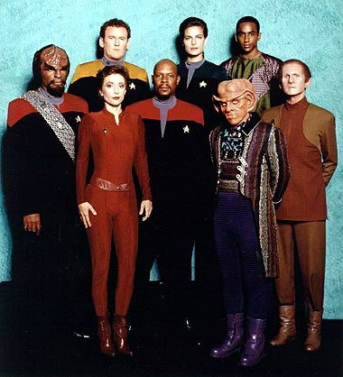 Luiz Castanheira é editor do Trek Brasilis |
 Com
a chegada da edição em DVD da quinta temporada
de Deep Space Nine nos Estados Unidos no
começo deste mês de outubro, torna-se oportuna
uma examinada dos episódios que compõem tal
pacote e cuja distribuição (em qualquer forma)
em terras brasileiras ainda é incerta (as demais duas
temporadas da série saem respectivamente em novembro
e dezembro deste ano na América, uma por mês,
e todas terão oportunamente cobertura similar do Trek
Brasilis).
Com
a chegada da edição em DVD da quinta temporada
de Deep Space Nine nos Estados Unidos no
começo deste mês de outubro, torna-se oportuna
uma examinada dos episódios que compõem tal
pacote e cuja distribuição (em qualquer forma)
em terras brasileiras ainda é incerta (as demais duas
temporadas da série saem respectivamente em novembro
e dezembro deste ano na América, uma por mês,
e todas terão oportunamente cobertura similar do Trek
Brasilis).